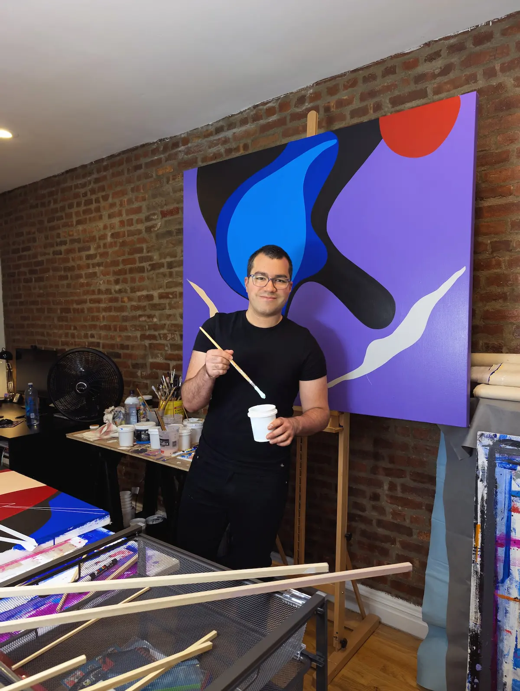

Juan Luis Landaeta (Caracas, 1988) is a multidisciplinary artist with a Master’s degree in Creative Writing in Spanish from New York University. His solo exhibitions include Jardín Desierto (Brooklyn, 2017), The identity of the line (2019), Unwritten (Washington D.C., 2019), New Works / New Paintings (New York, 2024), DOXA (Washington D.C., 2025) and Confinement is a vocabulary (Chicago, 2025). He is the author of La conocida herencia de las formas, Litoral central, and Roca Tarpeya. Landaeta has given talks and lectures on creativity and the intersection of literature and visual art at Emerson College, Georgetown University, Hunter College and Hofstra University. His work as a writer, visual artist, and chronicler of New York has appeared in international media outlets such as the New York Times, WSJ, Washington Post, Newsweek, CNN, Telemundo, Univision and EL PAÍS. He currently lives and works in New York City.